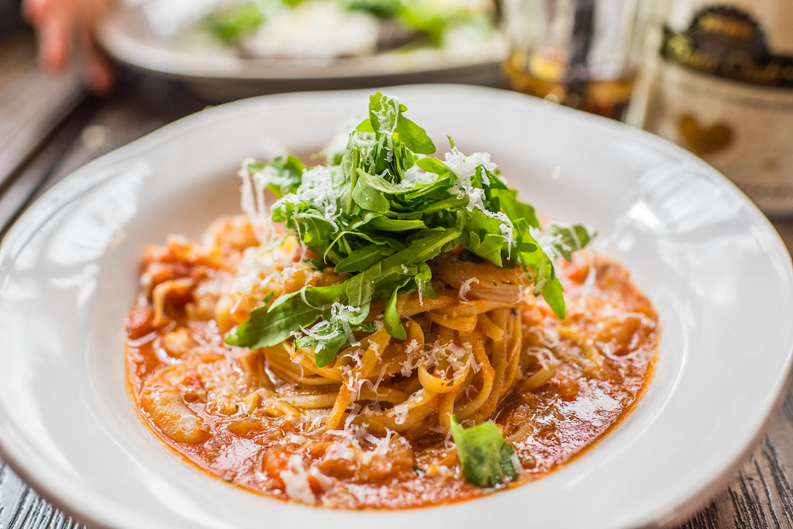

Home
Tomato, Chilli & Prawn Linguine

Description
A super simple, quick and easy recipe combining sweet tomatoes and subtle chilli to complement the succulent prawns, followed by a little lemon zest to top things off.
In just 5 minutes of preperation, and 15 minutes cook time, this dish will be ready to enjoy in only 20 minutes.
Ingredients:
- 300g dried linguine
- 2 tbsp olive oil
- 400g cherry vine tomatoes, chopped
- 1 large chilli, chopped and deseeded
- 3 cloves garlic, finely sliced
- 150g raw king prawns
- 1/2 lemon, squeezed
- 1/2 25g pack of basil, leaves torn
Steps:
- Heat a large pan of salted water and bring to the boil
- While waiting for the pan to boil, heat the olive oil in large frying over a high heat
- Add the pasta to the boiling water and cook for 10-12 minutes
- After adding the pasta to the boiling water, add the chopped tomatoes to the frying pan, cook for 3 minutes until they begin to blister
- Now turn the heat down slightly and add the chopped chilli and garlic to the frying pan. Continue to cook for 3-4 minutes until fragrant
- Add the king prawns to the frying pan. Cook for 1-2 minutes until they turn solid pink
- Drain the linguine, but keep a cup of cooking water in a cup to add to the sauce
- Pour the linguine directly into the frying pan and mix with enough cooking water to coat linguine
- Season the linguine with 1/2 the torn basil and squeeze lemon juice while stirring
- Once fully mixed, add the rest of the basil and serve